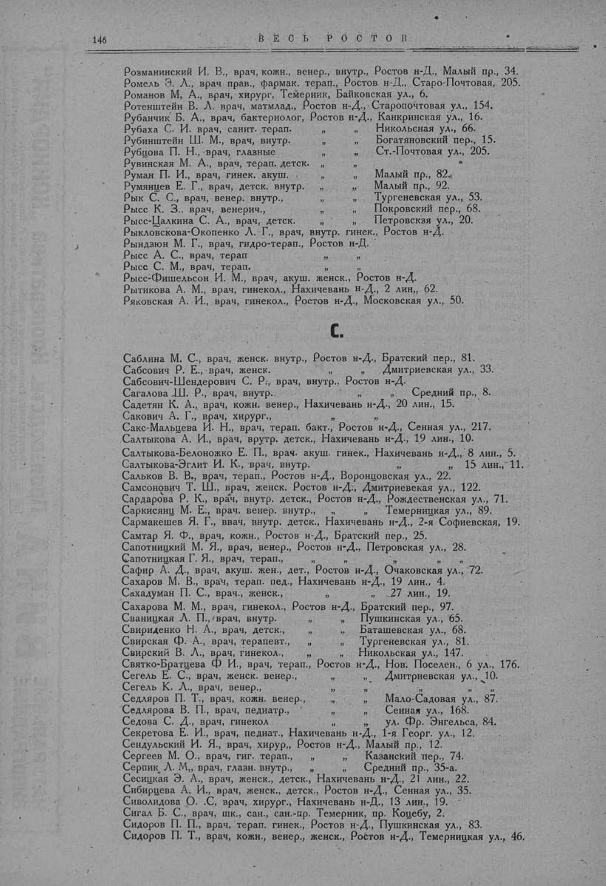

Лист источника 196
Скан

Распознанный текст
146 ВЕСЬ РОСТОВ
Розманинский И. В., врач, кожн., венер., внутр., Ростов н-Д., Малый пр., 34.
Ромель Э. Л., врач прав., фармак. терап., Ростов н-Д., Старо-Почтовая, 205.
Романов М. А., врач, хирург, Темерник, Байковская ул., 6.
Ротенштейн В. Л. врач, матмлад., Ростов н-Д., Старопочтовая ул., 154.
Рубанчик Б. А., врач, бактериолог, Ростов н-Д., Канкринская ул., 16.
Рубаха С. И. врач, санит. терап. " " Никольская ул., 66.
Рубинштейн Ш. М., врач, внутр. " " Богатяновский пер., 15.
Рубцова П. Н., врач, глазные " " Ст.-Почтовая ул., 205.
Рувинская М. А., врач, терап. детск. " "
Руман П. И., врач, гинек. акуш. " " Малый пр., 82.
Румянцев Е. Г., врач, детск. внутр. " " Малый пр., 92.
Рык С. С., врач, венер. внутр., " " Тургеневская ул., 53.
Рысс К. З., врач, венерич., " " Покровский пер., 68.
Рысс-Цалкина С. А., врач, детск. " " Петровская ул., 20.
Рыкловскова-Окопенко Л. Г., врач, внутр. гинек., Ростов н-Д.
Рындзюн М. Г., врач, гидро-терап., Ростов н-Д.
Рысс А. С., врач, терап " "
Рысс С. М., врач, терап. " "
Рысс-Фишельсон И. М., врач, акуш. женск., Ростов н-Д.
Рытикова А. М., врач, гинекол., Нахичевань н-Д., 2 лин., 62.
Ряковская А. И., врач, гинекол., Ростов н-Д., Московская ул., 50.
С.
Саблина М. С., врач, женск. внутр., Ростов н-Д., Братский пер., 81.
Сабсович Р. Е., врач, женск. " " Дмитриевская ул., 33.
Сабсович-Шендерович С. Р., врач, внутр., Ростов н-Д.
Сагалова Ш. Р., врач, внутр.. " " Средний пр., 8.
Садетян К. А., врач, кожн. венер., Нахичевань н-Д., 20 лин., 15.
Сакович А. Г., врач, хирург., " "
Сакс-Мальцева И. Н., врач, терап. бакт., Ростов н-Д., Сенная ул., 217.
Салтыкова А. И., врач, внутр. детск., Нахичевань н-Д., 19 лин., 10.
Салтыкова-Белоножко Е. П., врач. акуш. гинек., Нахичевань н-Д., 8 лин., 5.
Салтыкова-Эглит И. К., врач, внутр. " " 15 лин., 11.
Сальков В. В., врач, терап., Ростов н-Д., Воронцовская ул., 22.
Самсонович Т. Ш., врач, женск. Ростов н-Д., Дмитриевская ул., 122.
Сардарова Р. К., врач, внутр. детск., Ростов н-Д., Рождественская ул., 71.
Саркисянц М. Е., врач. венер. внутр., " " Темерницкая ул., 89.
Сармакешев Я. Г., врач, внутр. детск., Нахичевань н-Д., 2-я Софиевская, 19.
Самтар Я. Ф., врач, кожн., Ростов н-Д., Братский пер., 25.
Сапотницкий М. Я., врач, венер., Ростов н-Д., Петровская ул., 28.
Сапотницкая Г. Я., врач, терап., " " " "
Сафир А. Д., врач, акуш. жен., дет., Ростов н-Д., Очаковская ул., 72.
Сахаров М. В., врач, терап. пед., Нахичевань н-Д., 19 лин., 4.
Сахадуман П. С., врач., женск., " " 27 лин., 19.
Сахарова М. М., врач, гинекол., Ростов н-Д., Братский пер., 97.
Сваницкая Л. П., врач, внутр. " " Пушкинская ул., 65.
Свириденко Н. А., врач, детск., " " Баташевская ул., 68.
Свирская Ф. А., врач, терапевт., " " Тургеневская ул., 81.
Свирский В. Л., врач, гинекол., " " Никольская ул., 147.
Святко-Братцева Ф И., врач, терап., Ростов н-Д., Нов. Поселен., 6 ул., 176.
Сегель Е. С., врач, женск. венер., " " Дмитриевская ул., 10.
Сегель К. Л., врач, венер., " " " "
Седляров П. Т., врач, кожн. венер., " " Мало-Садовая ул., 87.
Седлярова В. П., врач, педиатр., " " Сенная ул., 168.
Седова С. Д., врач, гинекол " " ул. Фр. Энгельса, 84.
Секретова Е. И., врач, педиат., Нахичевань н-Д., 1-я Георг. ул., 12.
Сендульский И. Я., врач, хирур., Ростов н-Д., Малый пр., 12.
Сергеев М. О., врач, гиг. терап., " " Казанский пер., 74.
Серпик Л. М., врач, глазн. внутр., " " Средний пр., 35-а.
Сесицкая Э. А., врач, женск., детск., Нахичевань н-Д., 21 лин., 22.
Сибирцева А. И., врач, женск., детск., Ростов н-Д., Сенная ул., 35.
Сиволидова О. С, врач, хирург., Нахичевань н-Д., 13 лин., 19.
Сигал Б. С., врач, шк., сан., сан.-пр. Темерник, пр. Коцебу, 2.
Сидоров П. П., врач, терап. гинек., Ростов н-Д., Пушкинская ул., 83.
Сидоров П. Т., врач, кожн., венер., женск., Ростов н-Д., Темерницкая ул., 46.